Tissages yampara de Tarabuco
Des tissus aux motifs très fins, souvent des scènes de la vie quotidienne et des animaux, tissés à la main au métier. Le marché du dimanche est le meilleur endroit pour en trouver.
Tissages, bois sculpté, argent, et les marchés où tout se vend.
Des tissus aux motifs très fins, souvent des scènes de la vie quotidienne et des animaux, tissés à la main au métier. Le marché du dimanche est le meilleur endroit pour en trouver.
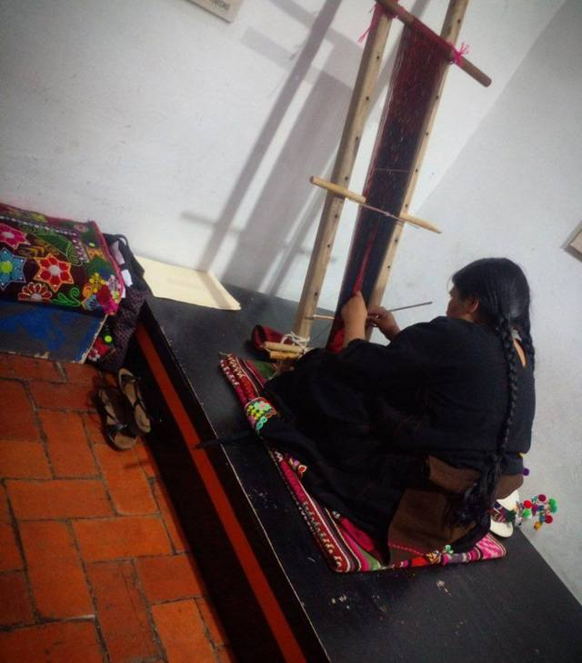
Rouges et noirs, peuplés de créatures fantastiques du monde souterrain : les tissages des communautés jalq'a, autour de Maragua, sont parmi les plus étonnants des Andes.
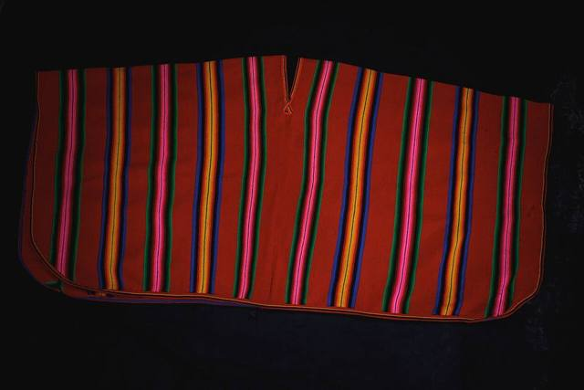
Dans la région de Charazani, les tissages accompagnent la médecine traditionnelle : sacs à feuilles de coca et ponchos aux couleurs vives, faits dans les communautés.
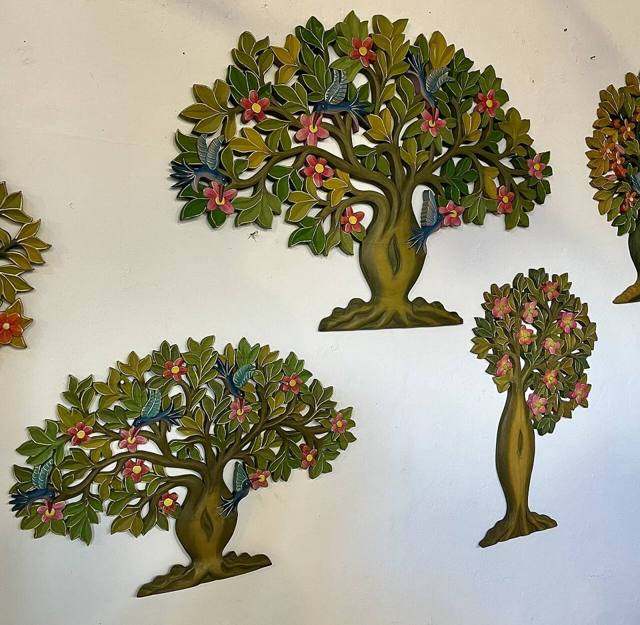
Anges, saints et retables : les ateliers de San Miguel perpétuent la sculpture des missions jésuites, et restaurent encore les églises de la région.
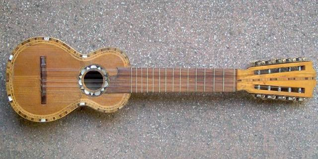
La petite guitare à dix cordes des Andes, fabriquée par les luthiers d'Aiquile. On peut en commander un sur mesure.
Où : Aiquile · Cochabamba
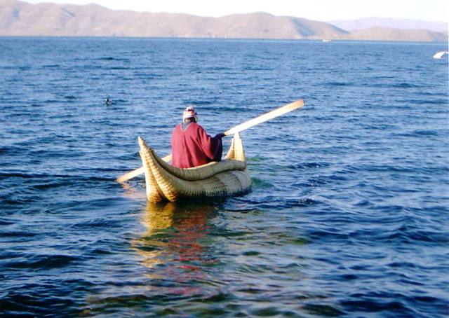
Sur le lac Titicaca, on construit encore des barques avec le roseau du lac. Les artisans de Huatajata en font aussi des modèles réduits.
Où : Huatajata · La Paz
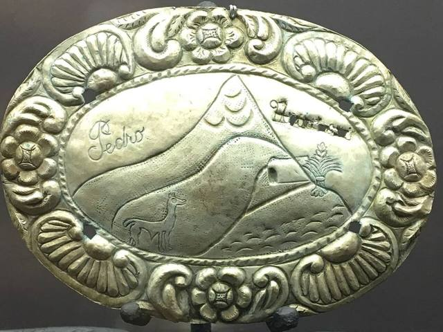
Bijoux et petits objets en argent, dans la ville qui a frappé la monnaie de l'empire espagnol. Achetez en boutique, avec un poinçon.
Où : Potosí
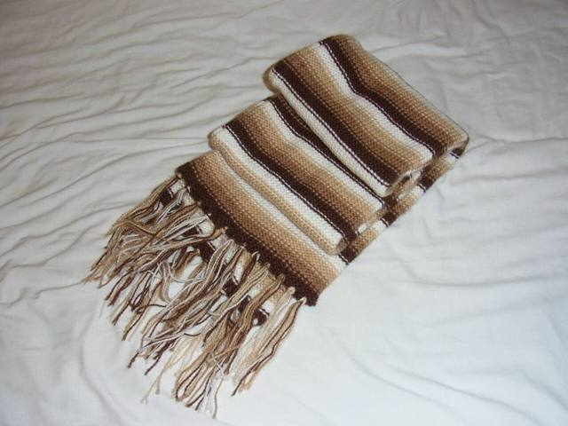
Pulls, écharpes et ponchos chauds pour l'Altiplano. À La Paz, les rues Sagárnaga et Linares en sont pleines ; vérifiez qu'il s'agit bien de laine.
Où : La Paz
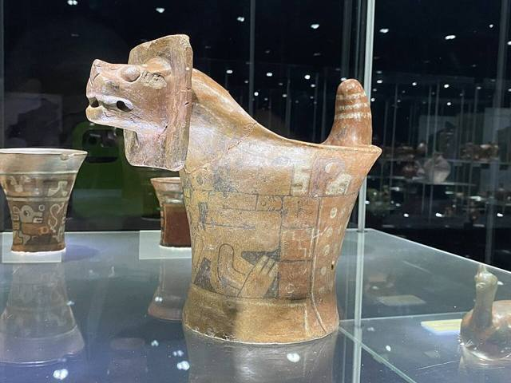
Au village, des artisans reproduisent les céramiques et les sculptures de la culture tiwanaku. De belles copies, à ne pas confondre avec des pièces anciennes.
Où : Tiwanaku · La Paz
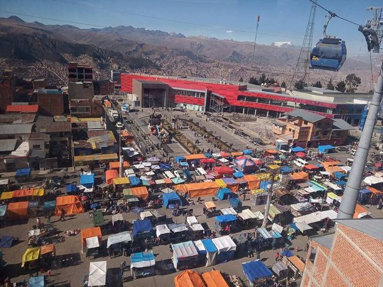
Le jeudi et le dimanche, des kilomètres d'étals à El Alto : on y trouve de tout, des pièces de voiture aux vêtements de cholita. À visiter sans rien de précieux.
Où : El Alto · La Paz
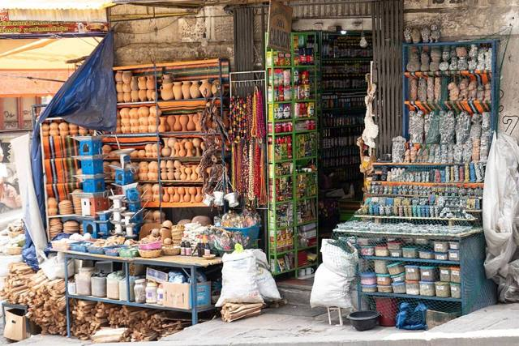
Rues Linares et Jiménez, à La Paz : herbes, amulettes, fœtus de lama et offrandes pour la Pachamama, préparées par les yatiris.
Où : La Paz
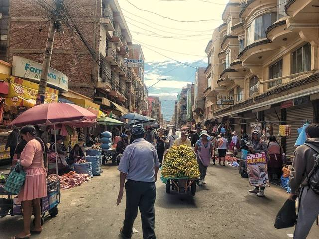
L'un des plus grands marchés à ciel ouvert d'Amérique du Sud, à Cochabamba : fruits, épices, artisanat, tout se vend dans un labyrinthe de rues.
Où : Cochabamba
Le marché de Santa Cruz pour les fruits tropicaux, les jus frais et la cuisine cruceña : idéal pour goûter un majadito ou un cuñapé.
Cruches, pots et figurines en terre cuite, faits par les potiers de Cotoca, juste à côté de Santa Cruz. On les trouve autour du sanctuaire.
Où : Cotoca · Santa Cruz


_13.jpg){kind=link}
-5.jpg){kind=link}